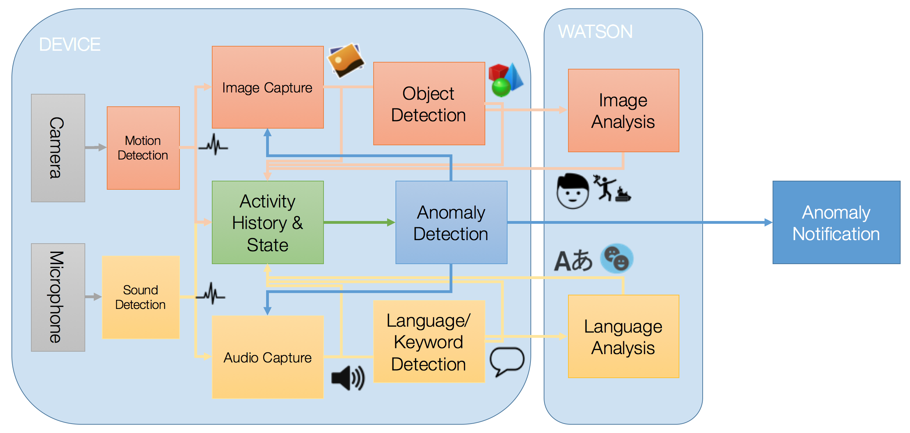
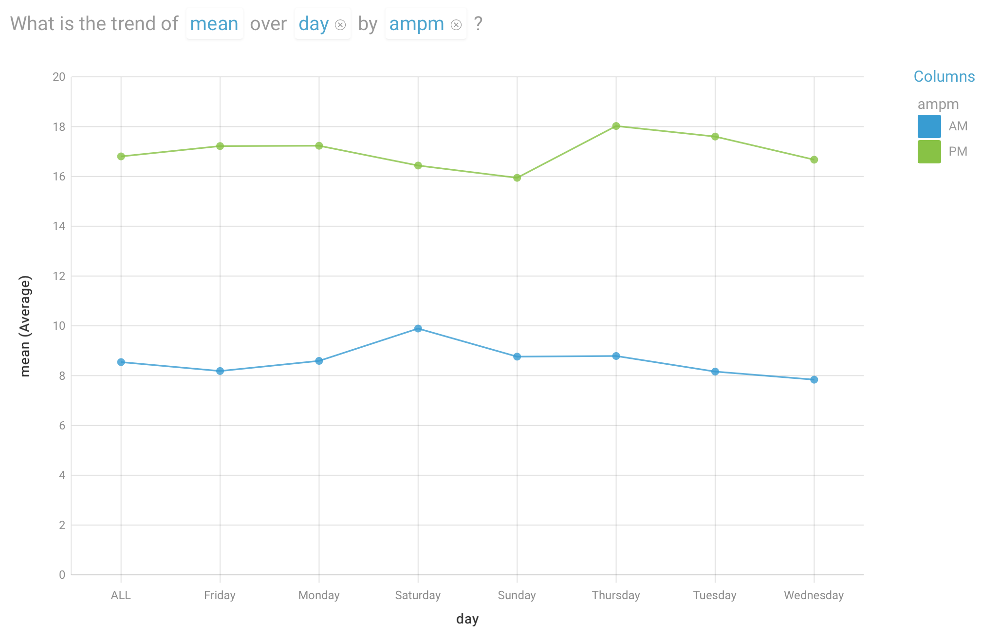
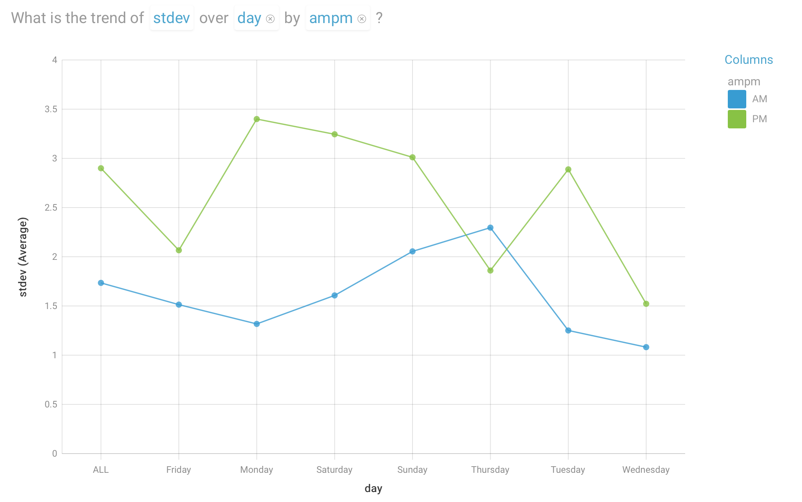
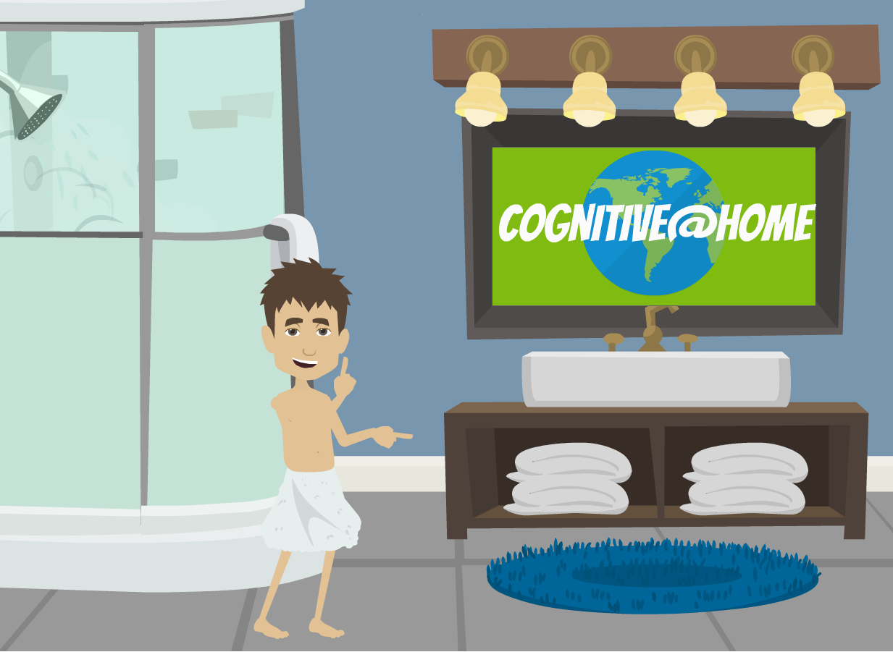
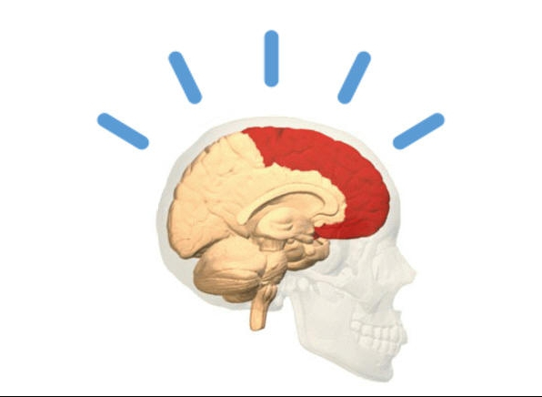
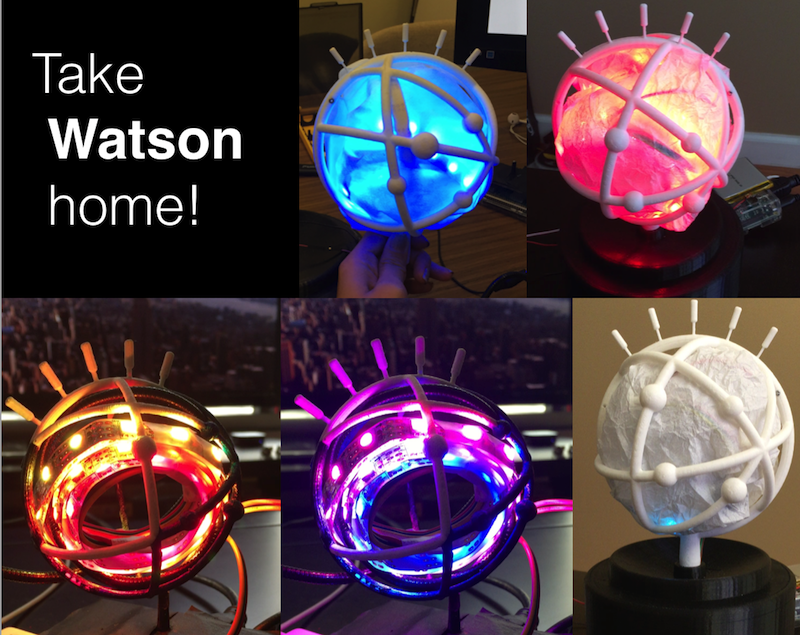
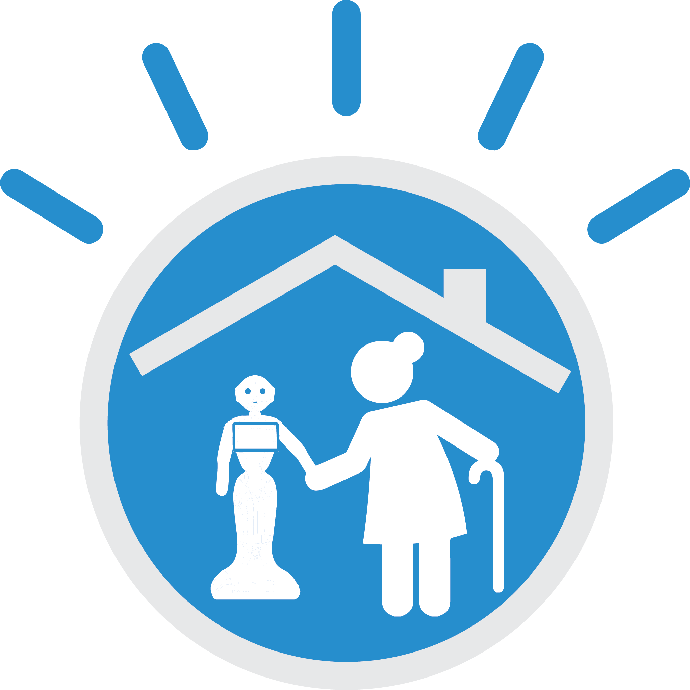
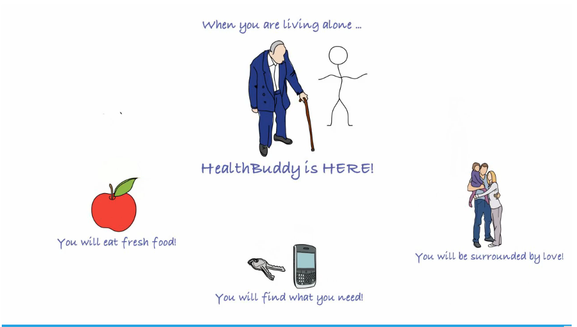
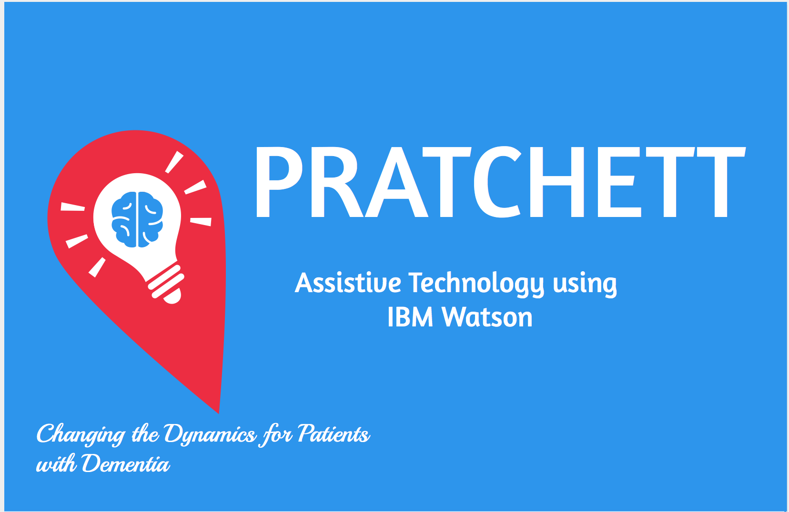
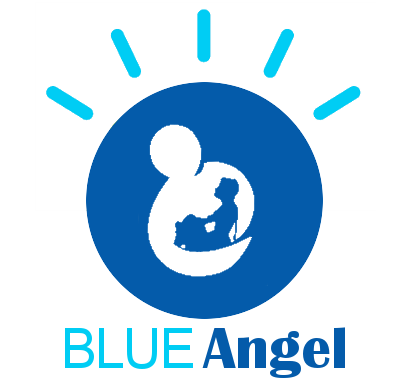

Funding: US$196,985 from 384 investors
Improve the elderlys' ability to age at home through understanding of daily activities inferred from image analysis.
The need for helping elderly individuals or couples remain in their home is increasing as our global population ages. Cognitive processing offers opportunities to assist the elderly by processing information to identify opportunities for caregivers to offer assistance and support.
Rather than depending on sensors worn on the body (and needing to be not forgotten, recharged, etc..) or installing sensors on individual devices (e.g. sink, cabinet, refrigerator, etc..), this solution utilizes passive monitoring devices, notably video camera(s) with multi-channel microphones, to sense activity, record events, and build a model of normative behavior.
| Initially we intend to monitor the kitchen and recognizes the presence of a person (not an individual) in the room. From this simple event detection we will build a normative baseline of daily activity and detect when that daily activity exhibits aberrations (e.g. no activity in kitchen after +2 std. dev. past median time). The visual recognition algorithm will run on the local device (e.g. RaspberryPi with camera), the issues of round-trip latency to the cloud, or bandwidth required, or security or privacy concerns, will be eliminated. Only events generated from this recognition will be sent to the cloud to build (and update) the normative behavior model. This initial scenario may be easily extended to other passive monitoring capabilities, e.g. audio, motion (sonar), electrical circuit, , ... as well as deployment in other area, e.g. entry way, bathroom, hallway, etc.. to provide support for additional scenarios, e.g. medication adherence, diet, exercise, ... |

|
Strawman Architecture

GitHub repositories are publically accessible at:
Link to data (rough-fog is the device DB name in Cloudant):
With almost three (3) weeks of data collected patterns are emerging. Added new database to Cloudant (rough-fog-stats) to store the statistical values. Next step is consume them on the Rpi when it starts, calculate any update from Cloudant historical record (e.g. start-up and/or recovery mode), and then update the values with each event processed on the Rpi (e.g. each motion detection event that generates the JSON payload).
Will need to setup another asynchronous thread to update the Cloudant DB periodically from a local file-system cache of the JSON encoded statistics; That process will periodically test for the condition of no events within a specified period of time. Will need to record the date/time in the statistics, as well as the last seen record ID to request updates only and check for last known event when testing condition.
The graphs below articulate the following:
 |
 |
 |
 |
getjson2csv script;
the DB can be specified on the command line
getjson2csv script; [ List of shell scripts - listed in the order they should be run:
mkclass - Script to create rough-fog-person.csv file and all dependencies including download from Cloudant; defaults to 'rough-fog', 'person' (24 hours TTL for refresh, but can be changed in script)
getjson2csv - Script to pull JSON from Cloudant and convert to CSV, including calculating statistics and encoding as CSV.
mkclassvalues - Script to pull all VisualInsights and Alchemy "classifiers" and create CSV with class, score, time, date and event ID; can be specialized with DB and one or more classifiers; if only one classifier is specified, it assume Alchemy only (e.g. 'person').
mkintervals - Script to distinguish event time into 'day' of week, 'ampm' AM or PM, and 15 minute 'interval' in addition to default 'doc/hour' bucket
mkclassintervals - Script to calculate statistics for one classifier (default 'person') occurence by bucket (default 'doc/hour'; option 'interval') across AM and PM and days of week; note that 'doc/hour' is converted to simply 'hour' for output file.
new2json (AWK)
- Convert the CSV results of mkclass (e.g. rough-fog-person.csv) to a JSON object
(e.g. rough-fog-person.json)
The process of preparing JSON data for Watson Analytics is cumbersome. While replication from Cloudant into dashDB is provided and dashDB can be accessed from WA (n.b. you need a paid account), the refinement capabilities in WA are insufficient for any non-trivial transformation (e.g. time into day of week). I wrote UNIX shell scripts to download the JSON data, convert to CSV, calculate statistics on the columns -- also not provided by WA, extract classifiers' scores for all events, and catagorize events into day-of-week and AM-PM bins. These scripts can take a long time to run on a laptop.
|

Trend of mean time for person in kitchen over days of week |

Trend of standard deviation for person in kitchen over days of week |
These images are created using Watson Analytics. It is simple to get a free account and load the CSV files.
Here are some additional visualizations of the data.

|

|

|


Installation on kitchen shelf


The resin.io service provides a customizable base image with which to "flash" the uSD card for the RaspberryPi. The image may be configured with the SSID and password for the local WiFi network.
The "AgeAtHome" application we have defined provides a context in which devices participate. Each device is assigned to one application. Once a device has been flashed and booted, it connects to the resin.io service and presents itself within the application context.

Each device associated with the application can be inspected, including summary status and logs (e.g. stderr).

Including the ability to ssh(1) into a terminal for command line interface:

Listing of motion detection volume data in file system

IBM IoTF Platform Dashboard
Changes were made to both Dockerfile as well as initial script to enable IoTF/QS and sample C program only sends system status. Will need to change the sample program to progres HTTP requests to send any JSON payloads (i.e. our events).

IBM IOTF Real-time Insights rule specification

IBM IOTF Real-time Insights rule condition specification

IBM IOTF Real-time Insights rule action specification
|
 Cognitive Home |
 Dementia Detector |
 Watson Globe |
 Cognitive Companion |
 Health Buddy |
|
Recovery Recommender |
 Pratchett |
Cognitive Caregiving |
 Blue Angel |